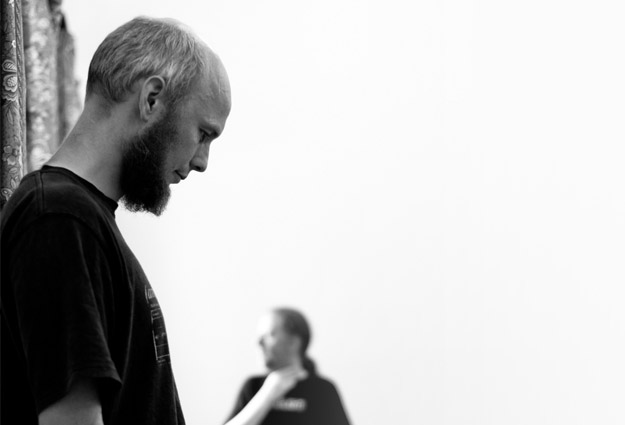

If Wet #4 was another lively and well attended affair. As ever our guests did us proud.
Here is the full audio recording, in two parts: Part1 / Part2
Here’s an overview of what went on, so you can access topics of interest:
Welcome

“Actually I don’t know quite what to expect, which is one of the delights of doing If Wet!”
MortonUnderwood present…
[2:20 – 38:36 | Part 1]
World Listening Day
[2:20 – 7:00 | Part 1]
We started by introducing World Listening Day before going on to cover our release on RHP, entitled “Field Augmentation”.
“World Listening Day is to celebrate the practice of listening as it relates to the world around us, environmental awareness, and acoustic ecology.”
“I don’t know whether you’ve ever experienced a tube journey but it is phenomenally loud sometimes. […] For me those sorts of journeys are fascinating because you have people there who would never normally listen to that sort of sound. I would go to a concert that sounds rather like that […] but a lot of the people on the tube definitely wouldn’t.”
Field Augmentation
[7:00 – 38:36 | Part 1]

“We are very open to all of the chance sounds of course that appear in that setting; of which there are many.”
“[…] has the rather odd effect of sounding, as you’ll hear in a few minutes, like a scrapyard in a cathedral.”
“We are going to play this track in full. It’s about seven minutes long, so this is an endurance listening moment.”

“It’s quite interesting that people seem to be paranoid if you take a camera out but to my surprise it’s the other end of the scale with microphones.”
[David talking about our experience when recording in the field]
“Why is it that one type of sound is acceptable in a certain environment and another type of sound isn’t?”
[Sam talking about the recording of his piece The Bells]
Laura Kriefman
[00:09 – 01:02:42 | Part 2]
Laura Kriefman introduced us to her work as choreographer, technologist and sound artist.

“I came up with this ludicrous theory […] which is that the more labour saving devices we’ve found, the less we have rhythm in our body.”
[Laura discussing why we find dancing increasingly awkward]
“So, I started this plan to liberate dance. […] I may never achieve it but I am going to keep trying. […] I started taking all our work we were doing and putting it slap bang in the environment people were spending time in, because I wanted to show the way people move every day is beautiful.”

“I wanted to create something which could be installed anywhere, whether it’s a country estate in the middle of a forest or on a street corner. […] The smallest one is small enough to hold and the largest one is large enough to sit on.”
[Laura talking about her Rolling Stones project]
“Would anybody like to touch a Rolling Stone?”

“That’s playing on that base of chaos. It’s a really unusual place to put yourself, to create a piece of work when you know it’s going to tour because you have to make something that’s tourable. So, it has to have a finite form in the programming, it has to last 45 minutes, it has to be suitable for these kinds of people […]”
[Laura discussing applying chaos in her latest work]
Moving on to her mechanical bird building, Laura outlined her approach to making a variety of birds for her latest exhibition.
“How can I create a way for people to look up?”
“Some of the sculptures have very real birds and some of them have imaginary birds, so of course honker birds do not exist, nor do fluster birds. I only brought two of the fluster birds, there will be six living in this nest.”

“All the birds are kenetic and hand manipulated because actually it’s more fun.”
“For the final one I need five volunteers!”

Run What Ya Brung
[01:05:14 – 01:16:45 | Part 2]
We run a regular feature at If Wet in which members of the audience are invited to bring along and demonstrate instruments, sound objects and sonic oddities. This month our regular contributor Richard Windley brought down his self-built Stroh guitar and amplifier. Once again, a remarkable rarity demonstrated in our village hall!
Richard Windley
[01:05:14 – 01:16:45 | Part 2]

“The original Strohs were made out of some sort of nickle and aluminium alloys, which I guess were cutting-edge in the early nineteen hundreds. […] What Stroh did was he took part of the energy from the bridge and he pivoted it and brought this little arm down onto this very, very thin diaphragm, which is spun aluminium.”
Once again, the event ended with a lot of people sticking around to chat. One of the core aims of If Wet it to build links locally. We are confident there are people who share our interests out there and we’d like to hook up with them to form some sort of creative community. Another successful If Wet, see you at the next one!
________________________________________
The full set of Pete’s photographs of If Wet are available here.
Everyone who presented! Everyone who engaged and provided feedback. Everyone who came. Kavita and Gill for running the bar and tidying up. Pete Ashton for taking photographs.